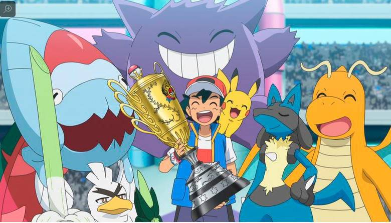
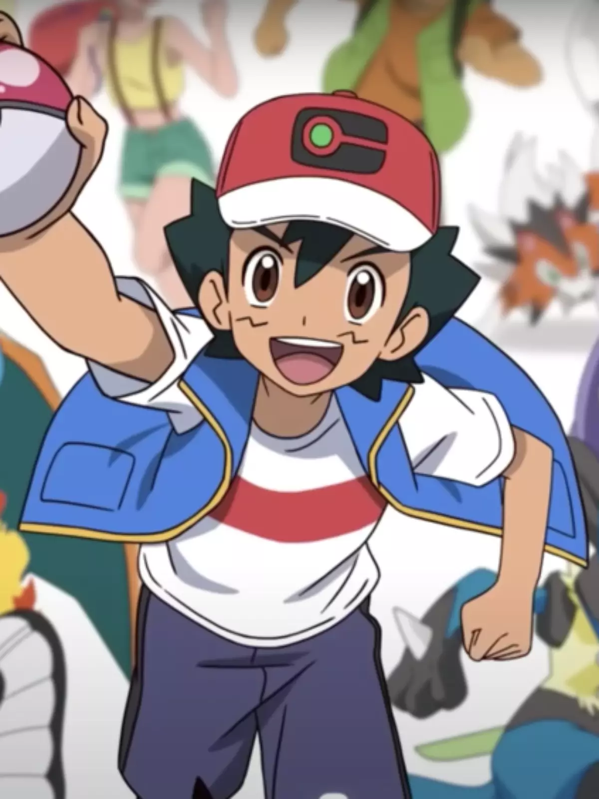

Pokémon

O que é pokémon
Pokémon é uma série de jogos eletrônicos desenvolvidos pela Game Freak e publicados pela Nintendo como parte da franquia de mídia Pokémon. Lançado pela primeira vez em 1996 no Japão para o console Game Boy, a principal série de jogos de RPGs, que continuou em cada geração em portáteis da Nintendo.

não achei
Ash Ketchum
Ash Ketchum é um personagem fictício do anime e mangá da franquia Pokémon, propriedade da Nintendo. Criado por Satoshi Tajiri, Ash é o protagonista das séries de anime da franquia, e aparece em outros produtos relacionados com a mesma.